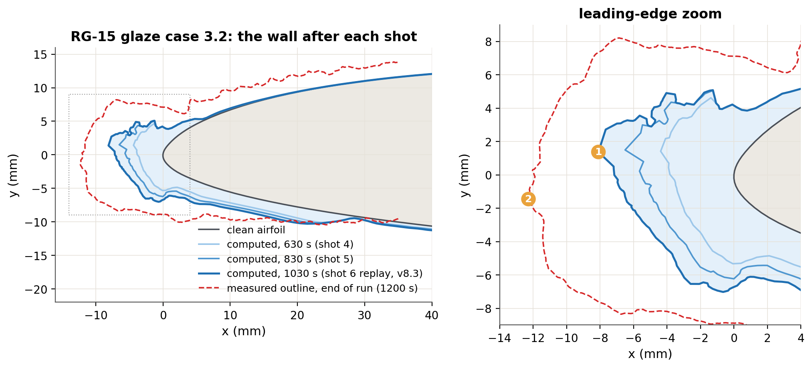
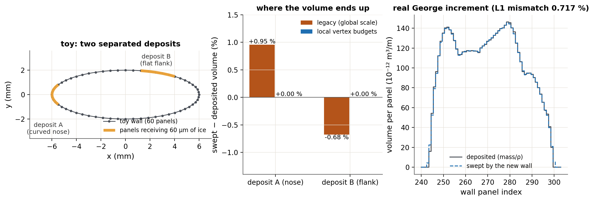
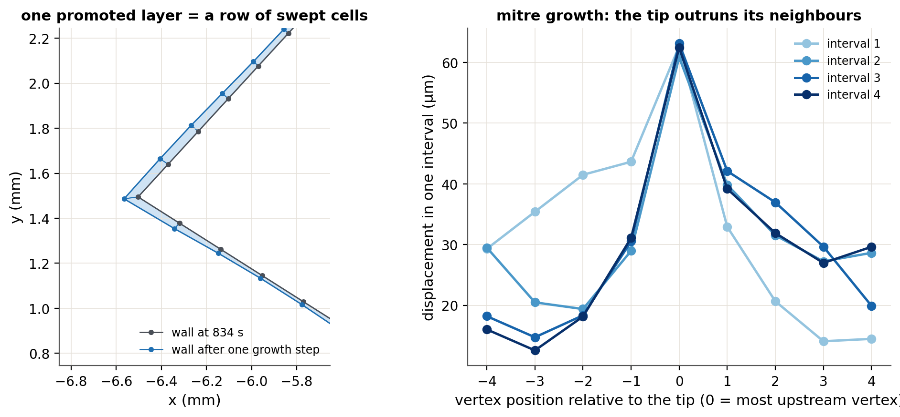
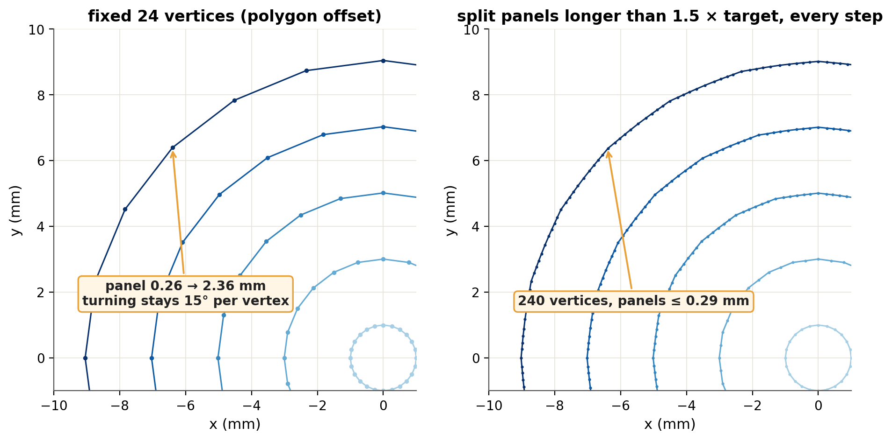
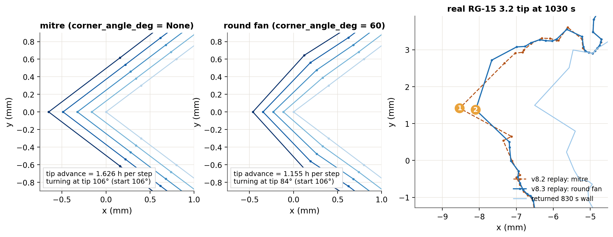
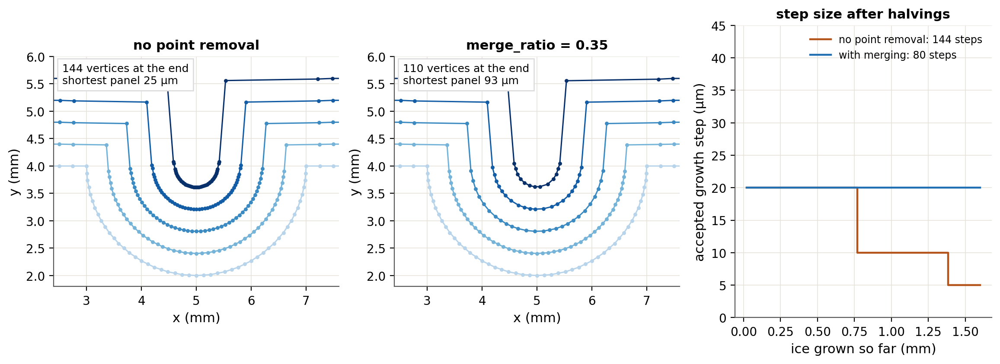

Growing the ice surface
The freezing balance tells the solver how many kilograms of ice formed on each part of the wall. This page explains how those kilograms become a new wall shape: a polygon that moves outward, sweeps a layer of new ice cells, and must stay simple, well resolved and mass-conservative while it does so.
- From kilograms to a new wall Basic
- The simple approach and why it was replaced Basic
- Local vertex budgets Intermediate
- Each step sweeps a layer of conducting cells Intermediate
- Why fixed vertices turn into facets Intermediate
- Curvature-consistent normals Intermediate
- Convex corners: mitre or round fan Advanced
- Concave pockets: merging fronts Advanced
- When a step fails: halving Advanced
- Local and global conservation, density Advanced
- Where it lives Advanced
From kilograms to a new wall Basic
In two dimensions the wall of the airfoil (clean or already iced) is a closed polygon: an ordered list of points, called vertices, joined by straight segments called panels. Every quantity the solver computes on the wall (collected water, heat transfer, frozen mass) is stored per panel or per vertex. The code class for this polygon is Surface in icing/geometry.py; it keeps the points in counter-clockwise order, so the outward normal of each panel points into the air.
After a freezing step the solver knows the mass of new ice on each panel, \(m_i\), in kilograms per metre of span (the calculation is two-dimensional, so everything is "per metre of span"). Turning that into a shape takes three ideas:
- Mass to volume. Divide by the ice density \(\rho\): \(V_i = m_i/\rho\). In 2D a "volume per metre of span" is an area, in m². The production default is \(\rho = 917\ \mathrm{kg/m^3}\) (dense ice;
ice.densityin the case files). - Volume to thickness. Spread over a panel of length \(L_i\), the new layer is about \(h_i \approx V_i / L_i\) thick.
- Thickness to displacement. Move the panel's vertices outward so that the band between the old and the new panel, the swept cell, has exactly the area \(V_i\).
Repeated over many growth steps, this is how the ice horn of a glaze case builds up. Figure 2 shows the real computed walls of the RG-15 glaze case 3.2 after three shots, together with the measured outline at the end of the experiment. (A "shot" is one CFD solution followed by a period of icing on a frozen flow; see Running a campaign.)

runs/nibi/glz81_32, the 1030 s wall of the offline shot-6 replay with the convex-corner limit described below (runs/diag_tip/c_s6_32, 1,005 vertices), and the measured outline after the full 1200 s exposure (mccs_32.csv, red dashes). Call-out 1: the computed tip at 1030 s, x = −8.10 mm. Call-out 2: the measured forward extent, x = −12.28 mm. The model has not yet reached 1200 s and this comparison is not a validation (see How we know it works). The vertex counts change between shots because the wall is refined and points are merged; that is the subject of this page and the next.Ice growth is bookkeeping with a ruler. Each panel knows how many kilograms froze on it. Dividing by density gives an area; the wall is pushed out until the strip it sweeps has that area. The hard part is not the arithmetic but keeping the polygon healthy while it grows for thousands of steps: panels stretch, corners sharpen and pockets close.
The simple approach and why it was replaced Basic
The first growth law in the project is Surface.grow() in icing/geometry.py. It is still the reference implementation for the legacy controller. It works in three moves:
- average the thickness of the two panels around each vertex: \(t_v = (V_{v-1}+V_v)/(L_{v-1}+L_v)\);
- move each vertex by \(t_v\) along its bisector normal, the normalised sum of the two adjacent panel normals;
- multiply all displacements by one scalar \(s\), found by a root solve (Brent's method), so that the total swept area equals the total deposited volume exactly.
thickness = (mass / rho + np.roll(mass / rho, 1)) / (lengths + np.roll(lengths, 1))
normal = self.normals + np.roll(self.normals, 1, axis=0)
displacement = thickness[:, None] * normal / norm[:, None]
def residual(scale):
# swept area evaluated directly, not as a difference of two large polygon areas
a = (self.points + scale*displacement) - self.points
b = self.edges + np.roll(a, -1, axis=0)
return .5*float(np.sum(cross(a, b) + cross(b, self.edges))) - target
scale = brentq(residual, 0, upper, xtol=1e-13)
The single scale factor makes the total exact, but not the parts. On a curved wall a vertex moving outward sweeps a fan that is larger than thickness × length on the convex side and smaller on the concave side. The global factor then corrects this by taking volume from one place and giving it to another, even to a deposit on the other side of the airfoil. The toy test in Figure 3 (left, middle) shows the effect with two separated deposits of the same thickness on an elliptical wall: the legacy law gives the curved nose 0.95 % too much ice and the flat flank 0.68 % too little (scale factor 0.9916). The local law described next gives both exactly.

Surface.grow, global scale) and with local vertex budgets (nodal_growth._grow_local_volume); both computed by _build/fig_growth.py with the real functions. Right: real data from a saved George increment (runs/george_local_growth_audit_001/volumes.npz): deposited volume per panel and the volume actually swept by the new wall. The sum is exact, but per panel the swept volume is smeared by vertex lumping; the L1 mismatch is 0.717 % of the deposit.The right panel of Figure 3 is the measurement that started this: "The saved George increment has 0.71692% swept/deposited volume L1 mismatch due to vertex lumping" (docs/PHYSICS_REVIEW.md). Here the L1 mismatch is the sum over panels of |swept − deposited| divided by the total deposit. It is measured by growth_volume_audit(), which every growth step now reports.
With one density everywhere, moving volume between panels does not change the total mass. With different densities on different panels it would: volume taken from dense ice and given to porous ice changes the kilograms. The code therefore refuses a non-uniform density in Surface.grow() ("Nonuniform density requires locally mass-conservative geometry or explicit material transfer"). Global area agreement does not establish local conservation.
Local vertex budgets Intermediate
The growth kernel used by both the rime (nodal) path and the glaze (phase-column) path is _grow_local_volume() in icing/nodal_growth.py. Instead of one global factor, each vertex gets its own volume budget, half of each adjacent panel's deposit:
If vertex \(v\) moves a distance \(\ell_v\) along a unit direction \(\mathbf n_v\), its exact contribution to the polygon area is \(\tfrac12\,\ell_v\,\mathbf n_v \times \mathbf c_v\), where \(\mathbf c_v\) is the chord from its previous to its next neighbour, taken at mid-motion (the neighbours are moving too). Setting this equal to the budget gives one equation per vertex:
$$\ell_v = \frac{B_v}{\tfrac12\,\mathbf n_v \times \mathbf c_v^{\,\text{mid}}}.$$Because \(\mathbf c_v^{\,\text{mid}}\) depends on the neighbours' motion, the code iterates this to a fixed point (at most 50 iterations, converged to \(10^{-13}\) of the displacement):
budget = .5*(volume + np.roll(volume, 1))
chord = np.roll(points, -1, axis=0) - np.roll(points, 1, axis=0)
for _ in range(50):
mid_chord = chord + .5*(np.roll(move, -1, axis=0) - np.roll(move, 1, axis=0))
area_per_length = .5*cross(normals, mid_chord)
if np.any(area_per_length <= 0):
raise GrowthStepLimit('Local volume growth lost its outward direction')
length = spend/area_per_length
if np.any(length > max_fraction*scale):
raise GrowthStepLimit('Growth exceeds local panel limit; reduce icing time step')
updated = length[:, None]*normals
converged = np.all(np.linalg.norm(updated - move, axis=1) <= 1e-13*length)
move = updated
if converged:
break
Two guards appear in the loop. A vertex may not move further than max_fraction (default 0.25) times the shorter of its two panels; a larger move could fold the wall, so the step is refused with a GrowthStepLimit. And the effective area per unit move must stay positive, otherwise the vertex is no longer moving outward. After the loop the new polygon is checked for self-intersection (Surface.validate_simple()) and every swept quadrilateral for folding; failures again raise GrowthStepLimit, with the offending vertices attached so the glaze path can hold back only the deposit that feeds them (column_ice_growth.promote_basal_column_ice).
Each vertex is responsible for half the ice of each of its two panels and must sweep exactly that much area, no more, no less. Nothing is borrowed from distant parts of the wall.
Each step sweeps a layer of conducting cells Intermediate
In the current solver the ice is not just a line; it is a body with temperature (see Heat inside the ice). So the new layer must be added to the solid finite-element mesh with its mass and energy. For the rime path this is grow_nodal_deposition() in icing/nodal_growth.py:
- Project the nodal deposition (mass and enthalpy) onto panels with the same half-edge weights, so both travel together.
- Move the wall with
_grow_local_volume(). - Optionally merge new panels that became too short (see pockets).
- Allocate the deposit to the swept cells (
material_inventory.append_deposited_ice); this checks that every cell is a valid, non-overlapping quadrilateral (or triangle after a merge). - Append the cells to the conduction mesh with
solid_growth.append_conducting_layer(). Old triangles and old coordinates never move; only new triangles are added. - Carry each vertex's film mass to the same vertex of the new wall.
- Audit: mass, deposited enthalpy and film mass must close to \(10^{-10}\) relative.
At nodes shared between old and new triangles the temperature is mixed so that energy is conserved. With liquid water at the melting point \(T_m\) as reference, docs/CONDUCTING_GROWTH.md writes the update as
where \(C\) is a lumped nodal heat capacity (J/(m·K)), \(M\) the added mass and \(L_f\) the latent heat of fusion. The code checks this energy balance to \(10^{-8}\) relative and raises an error otherwise. The documentation is explicit that this mixing is "a conservative numerical projection, not a physical heat flux".
Figure 4 (left) shows one such layer on the real wall: one 4 s interval of the traced shot-6 replay of glaze case 3.2 at 834 s. The blue strip is the row of swept cells that became solid ice in that step. On the glaze path the same kernel is called when basal ice in the phase columns is promoted to the solid (promote_basal_column_ice; see Glaze).

runs/diag_tip/trace_s6.pkl (glaze case 3.2, shot 6, v8.2 code, mitre corners). Left: the wall before and after one growth step near the most upstream vertex, with the swept cells shaded. Right: how far each vertex moved in each of the first four intervals, by position relative to the tip. The tip moves 61–63 µm per interval, its immediate neighbours 29–44 µm. This is the "spike" discussed under convex corners.Why fixed vertices turn into facets Intermediate
Suppose the wall keeps the same vertices forever and every vertex moves outward by the same thickness. That is a polygon offset. In an offset, the angle by which the wall turns at each vertex (its turning angle) stays the same, while every panel gets longer in proportion to the local radius of curvature. On a leading edge whose radius grows from about a millimetre to about a centimetre the panels therefore stretch about tenfold, and the wall becomes a set of long straight facets with sharp kinks between them.

_grow_local_volume). Left: fixed vertices; panels grow from 0.26 to 2.36 mm and every vertex still turns 15°. Right: panels longer than 1.5 × target split before each step (wall_resolution.refine_wall); 240 vertices and panels of at most 0.29 mm at the end. Curves every 100 steps.This is exactly what happened in the RG-15 seven-shot rime campaign of 2026-11 (docs/MESH_ADAPTATION.md): "All shots kept the clean 666 wall vertices", the nose radius grew from under 1 mm to about 9 mm, and "nose panels stretched 17x (0.23 mm to 4.0 mm) into the visible facets". The audit of that campaign:
| CFD mesh | Max nose panel (mm) | Max turning (°) |
|---|---|---|
| Shot 1, clean | 1.035 | 10.2 |
| Shot 3 | 1.036 | 13.7 |
| Shot 5 | 1.585 | 24.6 |
| Shot 6 | 2.236 | 33.0 |
| Shot 7 | 3.127 | 37.2 |
| Final 1200 s wall | 4.026 | 75.6 |
The remedy is to add vertices during growth: wall refinement, done between shots and explained on the next page. Refinement inserts points exactly on existing panels, so it cannot restore curvature that was already lost; MESH_ADAPTATION.md therefore says to "apply it from shot 1".
Curvature-consistent normals Intermediate
The direction in which a vertex moves is a modelling choice. The bisector (sum of the two panel normals) only "sees" the two adjacent panels. The production path can instead use a Gaussian-weighted average of the normals of all panels within a few local panel lengths, weighted by panel length:
$$\mathbf n_v \propto \sum_j L_j\,\exp\!\Big(-\tfrac12\big(s_j - s_v\big)^2/w_v^2\Big)\,\mathbf n_j,\qquad |s_j-s_v|\le 3w_v,$$where \(s\) is the arc length along the wall, \(\mathbf n_j\) the normal of panel \(j\) and the width \(w_v\) is normal_smoothing times the mean length of the two panels at \(v\) (default 1.0; 0 restores the bisector).
for i, (si, w) in enumerate(zip(s, width)):
distance = (centres - si + .5*perimeter) % perimeter - .5*perimeter
near = np.abs(distance) <= 3*w
weight = lengths[near]*np.exp(-.5*(distance[near]/w)**2)
out[i] = weight@normals[near]
The stated purpose (docs/MESH_ADAPTATION.md, pipeline step 1): "Without this, vertices inserted on a facet move parallel to it and stay on the chord forever. With it, they take up the curvature of the corners around them on the next increment." The local volume budget is unchanged; only the direction changes. Where a smoothed direction becomes nearly tangential and folds a swept cell, the kernel retries the same budgets with bisectors at the affected vertices, and then everywhere (_unsmoothed_vertices in _grow_local_volume).
In two toy tests made for this guide (refined 24-gon grown to 9 mm, uniform and front-peaked deposition), smoothing did not make the wall measurably rounder: the radius spread was 0.055 mm with smoothing against 0.043 mm without, and the largest turning angle at the front was 33.8° against 30.6°. With uniform growth this is expected: a flat facet advanced by a local volume budget stays flat whatever the direction, because the budget fixes the normal advance. The benefit claimed in the documentation was therefore not reproduced in a toy; it is neither confirmed nor refuted here. Refinement itself made the clear difference (Figure 5).
Convex corners: mitre or round fan Advanced
The local budget has a hidden assumption at sharp convex corners. A vertex with exterior turning angle \(t\), sweeping half of each adjacent panel's layer of thickness \(h\), moves along its bisector by
$$\ell = \frac{h}{\cos(t/2)} \qquad\text{(the mitre offset)},$$and the corner stays exactly as sharp. At \(t = 106^\circ\) that is about \(1.66\,h\). But the model's growth law is growth normal to the ice surface. For that law (Huygens' principle) a convex corner is the centre of an expanding circular fan: it rounds off and advances by only \(h\). The project's physics review of 2026-11-17 (R42 in docs/PHYSICS_REVIEW.md) put it this way: polygon front tracking needs both "entropy" treatments; converging (concave) fronts merge, and diverging (convex) fronts need the fan, "which nothing provided".
The evidence came from a traced replay of case 3.2 shot 6 (Figure 4): the tip vertex advanced about 62 µm per 4 s interval, its neighbours 29–44 µm, the flank panels grew from 197/217 µm to 375 µm without any vertex being removed near the tip, and the tip's turning rose from 100° to 105°. The review concluded "The spike is kinematic, not a merge artefact."
The correction is the control corner_angle_deg (60° from package v8.3). A convex vertex turning more than this may move at most \(h/\cos(30^\circ) = 1.155\,h\). The part of its budget it cannot sweep is handed to its two neighbours, each receiving the share that came from the panel it shares with the corner (_corner_excess()). That is the round fan, carried on the existing vertices one panel wide. Total volume is exact, and no volume travels further than one panel.
corners = np.degrees(turning_angles(surface)) > float(corner_angle_deg)
half = .5*(surface.lengths + np.roll(surface.lengths, 1))
cap = budget/half/np.cos(np.radians(float(corner_angle_deg))/2) # length limit at each vertex
...
# inside the fixed-point loop: re-split the corner budgets from the original ones
spend, moved = _corner_excess(budget, area_per_length, cap, corners, volume)

_grow_local_volume; curves every 5 steps). Without the limit the tip advances 1.626 \(h\) per step and keeps its 106° turning; with corner_angle_deg = 60 it advances exactly 1.155 \(h\) and relaxes to 84°. Right: the real case 3.2 wall at 1030 s from the v8.2 replay (mitre, call-out 1, runs/preflight_v82/s6_32) and the v8.3 replay (fan, call-out 2, runs/diag_tip/c_s6_32), both started from the returned 830 s wall (light blue). Turning at the tip: 106.2° against 64.1°; the tip is 0.43 mm less advanced; the −124° notch at the base of the lower flank (visible below call-out 1) is gone.The review records the effect on the returned loads: "3.2 at 1030 s: tip turning 64 degrees instead of 106, tip 0.43 mm less advanced, the -124 degree notch at its base gone (sharpest reflex vertex -75.7 degrees), total ice -0.02 %". Case 3.1 shot 5 was bit-identical, because no convex corner on its horns exceeds 60°.
- 60° and 1.155 are a resolution choice (the same feature angle used for exit corners and merge notches), not a calibrated value. The fan is one panel wide, not new vertices on an arc.
- The measured outline gives the forward extent of the 3.2 ice (12.3 mm) but no tip radius, so whether real tips are sharper or blunter is not known.
- A directional (droplet-aligned) rime growth law would treat the tip differently again; the model has none. Where collection peaks at the tip, the tip still outruns its flanks, which is physics the correction keeps.
Concave pockets: merging fronts Advanced
In a concave region the opposite happens. The fronts on both sides converge, panels between them shrink, and the turning sharpens until the wall would fold over itself (the "swallowtail" of a polygon offset). Shrinking panels also shrink the allowed step, because a vertex may move only 0.25 of its shorter panel. Huygens' principle says the overtaken part of the front simply disappears. The solver has two tools for this.
Wall-point merging during growth (rime path)
merge_short_panels() in icing/nodal_growth.py merges the two outer vertices of any new panel shorter than merge_ratio (default 0.35) × its target spacing. The merged vertex \(M\) is placed so that the enclosed polygon area is unchanged: with neighbours \(P\), \(Q\) and the pair \(A\), \(B\), it lies on the line \(M \times (Q-P) = P\times A + A\times B + B\times Q\), at the point nearest the midpoint of \(A\) and \(B\). Merges never chain, never touch the closing panel, and each must leave its three neighbouring swept cells positive and convex; otherwise that merge waits. A merged layer records an inner-to-outer vertex map so that cells, film and checkpoints follow it.
P, A, B, Q = points[j-1], points[j], points[j+1], points[j+2]
c = cross(P, A) + cross(A, B) + cross(B, Q)
d = Q - P; w = np.array([d[1], -d[0]]); mid = .5*(A + B)
M = mid + (c - mid@w)/(w@w)*w # area-preserving, nearest the midpoint
if not (convex([I[j-1], P, M, I[j]]) and convex([I[j], M, I[j+1]]) and convex([I[j+1], M, Q, I[j+2]])):
skipped += 1; continue # the merge would fold a cell: wait

GrowthStepLimit. Left: without merging the bottom panels shrink to 25 µm and the step has to fall to 5 µm (144 steps). Middle: with merge_ratio = 0.35, 34 vertices are merged, the shortest panel stays 93 µm and the step stays at 20 µm (80 steps). Right: accepted step size against the ice grown. Computed with the real functions by _build/fig_growth.py.Pocket fills and crevice sealing (glaze path)
On the glaze path, sub-resolution concave pockets are filled by merge_converging_front() in icing/front_merging.py. Candidates are reflex vertices sharper than notch_angle_deg (60°) or next to panels shorter than merge_ratio × target. The pocket is the smallest wall run (at most max_span = 6 panels) whose closing chord lies in the air and crosses no wall; it is filled only if its area is below area_ratio (0.5) × target² and its own columns hold enough attached ice. The fill takes "the same fraction of every attached basal ice cell of the pocket's rows, at the cell's own specific enthalpy", so mass and energy are conserved exactly, and the run's interior vertices leave the wall. Since 2026-11-16 (R40) two lobes that grow into each other are also closed: when a vertex comes within contact_ratio (0.1) × target of a non-neighbouring panel, the crevice is sealed and the trapped void is represented as porosity in the surrounding ice. The module docstring is explicit that this is "a homogenization of a sub-resolution void, not a model of its content".
Both tools change the number of wall vertices inside a shot. The fluid mesh then has to be regenerated at the end of the shot (next page).
When a step fails: halving Advanced
Growth failures are sorted into two kinds by exception class (icing/geometry.py):
- Reducible failures carry the marker class
ReducibleStep: "the same interval with a shorter duration can avoid this failure", and the input state is unchanged.GrowthStepLimit(too large a move, a folded cell, self-intersection) is one; so are thermal non-convergence and film CFL limits. - Non-reducible failures, such as
ConservationError("Never retry it as a smaller geometric step") andWallRefinementError, stop the run with diagnostics.
for halving in range(max_growth_halvings+1):
trial_duration = duration/(2**halving)
# Every trial starts from the committed state, never from rejected ice.
# Do not catch thermodynamic, collection or conservation failures here.
try:
result = advance_snapshot_increment(state, snapshot, wall, duration=trial_duration, ...)
except GrowthStepLimit as error:
if halving == max_growth_halvings:
raise RuntimeError('Conducting-step growth limit exhausted; prior state remains valid') from error
continue
The glaze path does the same per interval in glaze_campaign.py (take = max(floor, take // 2) on a ReducibleStep); when the floor is reached, the exact inputs of the failing interval are saved as failure_interval_NNNNN.pkl so it can be replayed offline. Before halving, the glaze promotion first tries to throttle only the rows feeding the offending vertices (promote_basal_column_ice, the vertices and excess carried by the error).
Local and global conservation, density Advanced
Three levels of conservation are worth keeping apart:
- Global: total deposited volume = total swept area. Both laws achieve this to roundoff.
- Per vertex (dual cell): each vertex sweeps exactly its budget. The local kernel achieves this; the corner limit moves budget at most one panel.
- Per panel: each panel's swept cell holds exactly its own deposit. Neither law guarantees this; the swept cells are filled from the panel inventories by
append_deposited_icewith an exact allocation, andgrowth_volume_audit()reports the swept-versus-deposited difference (0.717 % L1 for the saved George increment).
For problems that need exact per-panel budgets, including ice removal, there is move_signed_interface() in icing/signed_interface.py. It solves a bounded least-squares problem for vertex motions along the bisectors so that every panel's signed swept area matches its target, and fails rather than redistribute when the fixed vertex topology cannot achieve it. Its docstring is careful: it "returns candidate boundary geometry ONLY".
Ice density
Production growth uses one uniform density per deposit (917 kg/m³ by default). Variable density is prepared but not in production (docs/VARIABLE_DENSITY_GROWTH.md). Simply removing the uniform-density guard would be wrong, because local smoothing moves volume between neighbouring cells, which could then hold fragments of different density and conductivity. The prepared alternative, material_partition.partition_material_cell(), cuts a convex cell into explicit parallel layers, each occupying exactly its own mass/density volume, and resolved_growth.append_resolved_material inserts them into the thermal mesh. The document states its status plainly: production growth dispatch is pending, and "Density prediction is not provided by this geometric partition".
- Growth is normal to the surface. No directional (droplet-aligned) or feather-growth law is modelled.
- One density per deposit; porosity appears only through sealed crevices and the sublimation-thinning model, not from a rime density correlation.
- Temperature mixing at nodes shared by old and new ice is a numerical projection, documented as such.
- All checks on this page verify numerics (conservation, geometry validity). None of them validates the predicted ice shape against experiment.
Where it lives Advanced
icing/geometry.py:Surface(polygon, normals,validate_simple), legacySurface.grow,swept_panel_areas,growth_volume_audit, the exception classes (ReducibleStep,GrowthStepLimit,ConservationError).icing/nodal_growth.py:_grow_local_volume(local budgets, corner limit),_corner_excess,merge_short_panels,grow_nodal_deposition.icing/solid_growth.py:append_conducting_layer(adds the swept cells to the conduction mesh, energy-conserving).icing/wall_resolution.py:smoothed_vertex_normals,turning_angles,refine_wall.icing/front_merging.py:merge_converging_front(glaze pocket fills and crevice sealing),restrict_wall_fields.icing/column_ice_growth.py:promote_basal_column_ice(glaze path calls the same kernel).icing/signed_interface.py:move_signed_interface(exact signed per-panel budgets, candidate geometry).icing/deformed_wall.py: snaps the CFD wall back to the canonical ice wall after deformation or remeshing (next page).- Docs:
docs/CONDUCTING_GROWTH.md,docs/MESH_ADAPTATION.md,docs/VARIABLE_DENSITY_GROWTH.md,docs/PHYSICS_REVIEW.md(entries of 2026-11-16 and 2026-11-17, R42).